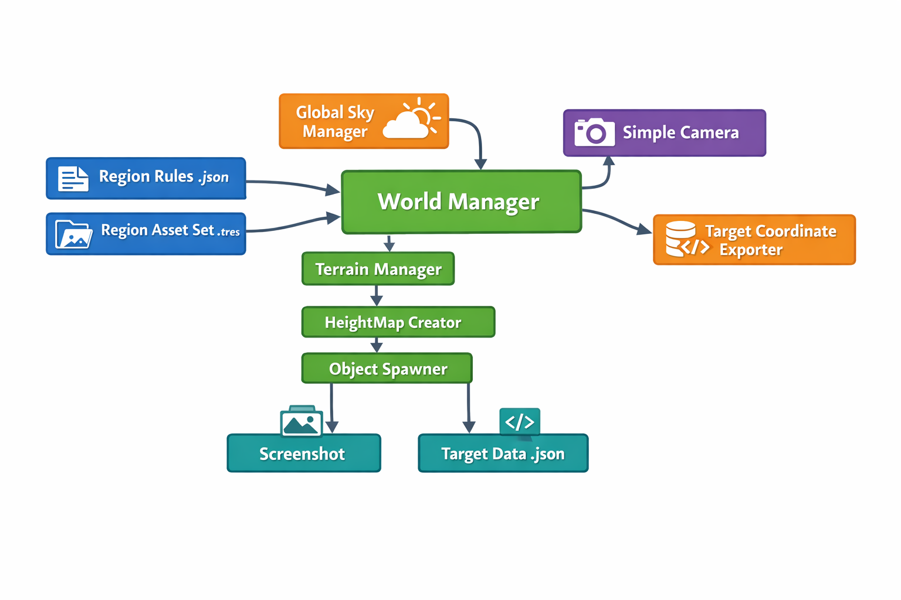

System Architecture
This page describes how the different systems of SceneGenerator interact to build a procedural scene and produce the final outputs.

High-Level Pipeline
WorldManager
│
├── Loads WorldSettings (global defaults)
├── Loads RegionRules (JSON)
├── Loads RegionAssetSet (.tres)
│
├── GlobalSkyManager → Sky, fog, weather
├── TerrainManager → Terrain mesh + heightmap
│ ├── SimpleNoiseGenerator
│ ├── HeightMapCreator
│ └── TerrainAssetManager
│
├── ObjectSpawner → Places environment objects & targets
│
├── SimpleCamera → Camera spawn & framing
│
└── TargetCoordinateExporter → JSON metadata export
Configuration Sources
Region Rules (JSON)
res://assets/regions/{regionId}/{regionId}.rules.json
Defines:
- Terrain shaping parameters (noise scale, height factor)
- Texture layer rules (height bands, slope overrides, biome overrides)
- Object spawning rules
- Local sky and weather settings
This file controls how a region behaves.
Region Asset Set
res://assets/regions/{regionId}/{regionId}_assets.tres
Contains:
- Terrain texture slots
- Prefab mappings (AssetId → PackedScene)
This file controls what assets are used.
Core Systems
WorldManager
Central orchestrator that runs the entire generation pipeline and triggers output.
TerrainManager
Builds terrain geometry, applies heightmaps and biome texturing, and prepares spawn targets.
HeightMapCreator
Generates height and control maps and applies them to Terrain3D.
ObjectSpawner
Places objects based on height, slope, biome, and distance rules.
GlobalSkyManager
Handles sky, fog, atmosphere, rain, and snow.
SimpleCamera
Determines camera spawn position and ensures targets are visible in the frame.
TargetCoordinateExporter
Writes target positions and metadata to JSON.
Outputs
Each generation cycle produces:
- A rendered screenshot
- A JSON file containing world coordinates of all target objects
This modular architecture allows region-based configuration while keeping generation logic reusable.